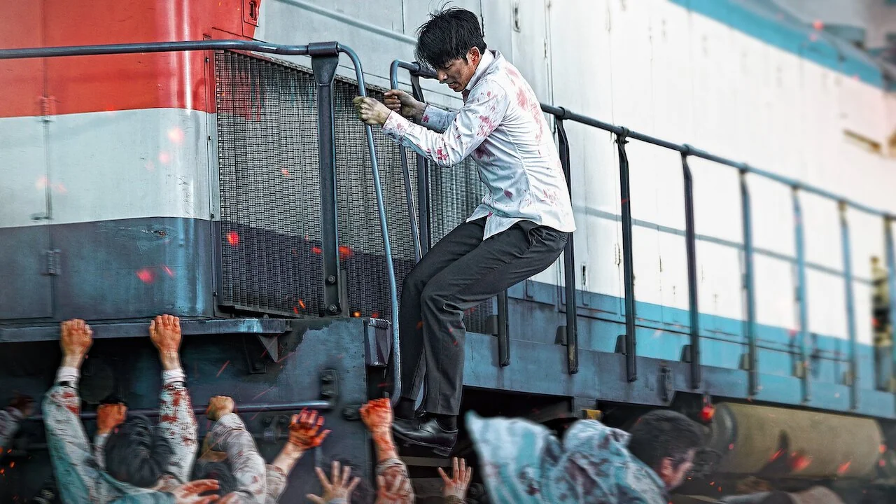
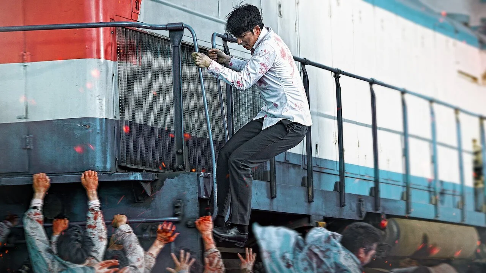

🚪 door 11 of the spell 🚪
zombies
gm, my gritty anon
i cannot decide which ones are more fun: zombies || vampires
and the cool thing about new orleans is that i don't have to choose
(the menu has plenty of both — plus, this is the city of legendary cemeteries,
including st. louis cemetery [easy rider (1969), the dead one (1961)],
lafayette cemetery [interview with the vampire (1994), angel heart (1987)],
and metairie cemetery [the beyond (1981)])
so today, we enjoy the midweek and organize our prepper plans
in case of the long-awaited — and millennial dream-come-true
zombie apocalypse
see you tomorrow for
the last door before 13


 


meanwhile... indulge yourself with our 2025 edition
of the top must-watch zombie flicks of all time:
- 28 days later (2002), by danny boyle
- 28 weeks later (2007), by juan carlos fresnadillo
- 28 years later (2025), by danny boyle
- night of the living dead (1968), by george romero
- dawn of the dead (1978), by george romero
- dawn of the dead (2004), by zack snyder
- day of the dead (1985), by george a. romero
- day of the dead (2008), by steve miner
- land of the dead (2005), by george romero
- night of the living dead (1990), by tom savini
- the crazies (2010), by breck eisner
- the beyond (1981), by lucio fulci
- shaun of the dead (2004), by edgar wright
- re-animator (1985), by stuart gordon
- train to busan (2016), by yeon sang-ho
- dead alive (1992), by peter jackson
- world war z (2013), by marc forster
- army of the dead (2021), by zack snyder
- zombieland: double tap (2019), by ruben fleischer
- one cut of the dead (2017), by shin'ichirô ueda
- planet terror (2007), by robert rodriguez
- the return of the living dead (1985), by dan o'bannon
- [rec] 2 (2009), by jaume balagueró && paco plaza
- the dead don't die (2019), by jim jarmusch


← back to the countdown